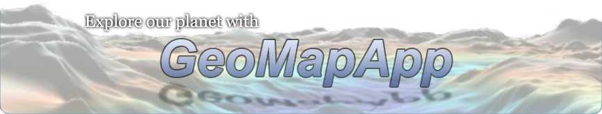
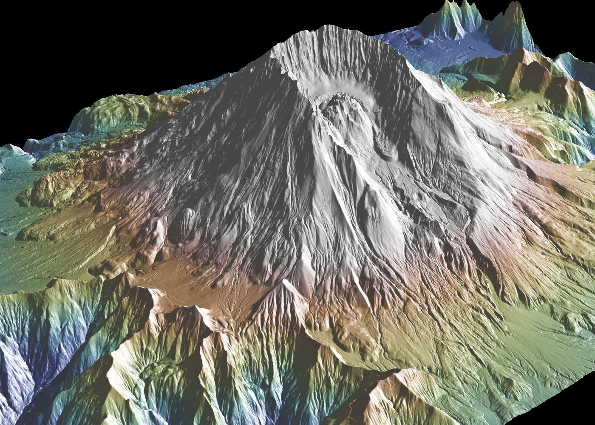
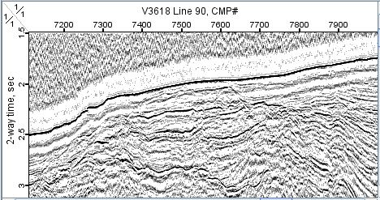
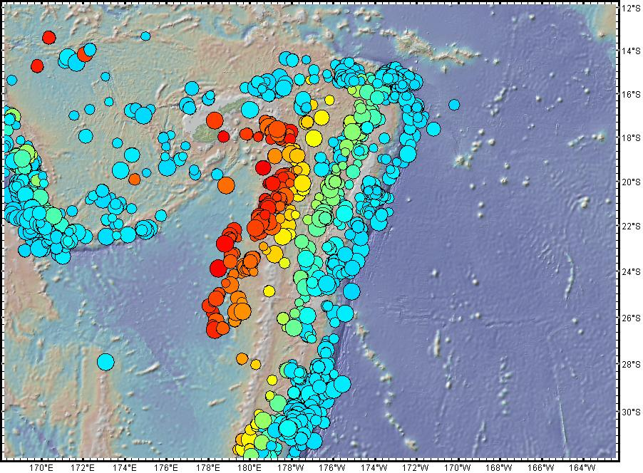
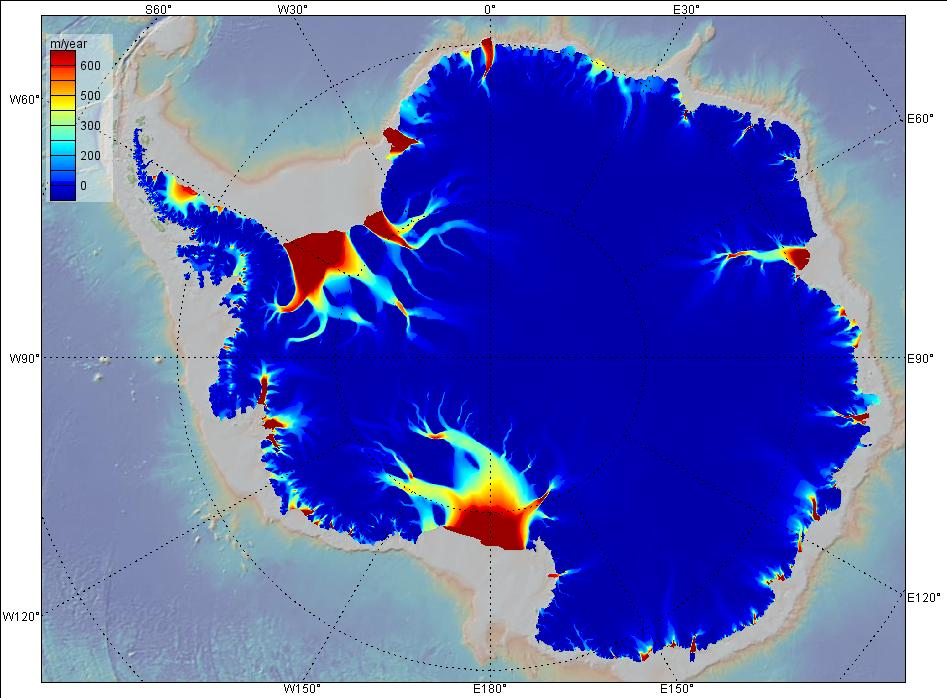
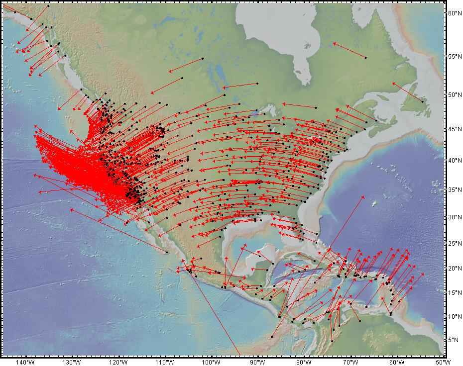
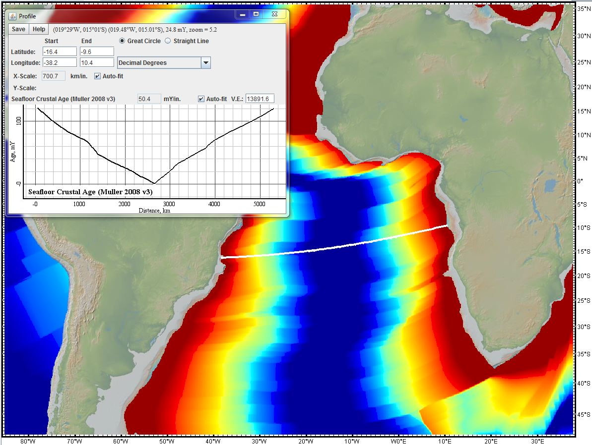

<!DOCTYPE html>
<html lang="en"></html>
<head>
	<meta http-equiv="Content-Type" content="text/html; charset=UTF-8">
	<title>GeoMapApp</title>
	<meta name="Description" content="GeoMapApp is a data exploration and visualization tool that is continually being expanded as part of the Marine Geoscience Data System.  GeoMapApp is an integrated mapping application developed at Lamont-Doherty Earth Observatory.">
	<meta name="Keywords" content="GeoMapApp">
	
	<meta http-equiv="Content-Language" content="en-us">
	<meta name="Copyright" content="Copyright (c) 2012 Marine Geoscience Data System">
	<meta name="Author" content="MGDS Team, Columbia University">
	<meta http-equiv="imagetoolbar" content="no">
	<meta name="MSSmartTagsPreventParsing" content="true">

	<link rel="stylesheet" type="text/css" href="css/main.css" media="all">
	<link rel="stylesheet" type="text/css" href="css/print.css" media="print">
	<link rel="shortcut icon" href="favicon.ico">
</head>
<body>
<div id="wrapper">
	<div id="mgds-header">
		<h1><a title="Go to GeoMapApp Home" href="https://www.geomapapp.org/">GeoMapApp</a></h1>
		<a href="http://www.nsf.gov/"></a>
	</div>
	<div id="content">
		<h1 id="page-header"></h1>
		<h2>GeoMapApp<sup><span style="font-size: medium">©</span></sup></h2>
		<div class="clearfix">
			<div style="margin:5px 5px 20px 5px;border:1px solid red;font-size:1em;font-style:italic;background-color:#FFEEEE;padding:5px;color:red;text-align:left;">
				We are currently experiencing technical difficulties. We anticipate a return of service by Monday, 
				August 21st. We apologize for the inconvenience.
			</div>
		<div id="portal_menu">
			<!--
			<h3>GeoMapApp Links</h3>
			<ul>
				<li><a href="https://www.geomapapp.org/index.htm">GeoMapApp Home</a></li>
				<li><a href="https://www.geomapapp.org/data_set_news.html">Recently-Added Data</a></li>
				<li><a href="https://www.geomapapp.org/FAQ.html">FAQ</a></li>
				<li><a href="https://www.geomapapp.org/GMA/newHelp/index.html">Help Pages</a></li>
				<li><a href="http://www.youtube.com/user/GeoMapApp">Video Tutorials</a></li>
				<li><a href="https://www.tapatalk.com/groups/geomapapp/">User Forum</a></li>
				<li><a href="https://www.geomapapp.org/terms_of_use_gma.html">Terms of Use</a></li>
				<li><a href="https://www.geomapapp.org/FAQ.html#CitingGeoMapApp">Citing GeoMapApp</a></li>
				<li><a href="https://www.geomapapp.org/education/index.html">Education</a></li>
				<li><a href="https://www.geomapapp.org/AtSea.html">GeoMapApp At Sea</a></li>
				<li><a href="https://www.geomapapp.org/gallery/index.html">Image Gallery</a></li>
				<li><a href="https://www.geomapapp.org/WhatsNew.html">Development History</a></li>
				<li><a href="https://www.geomapapp.org/eNewsletters/index.html">eNewsletters</a></li>
				<li><a href="https://www.geomapapp.org/statistics.html">Statistics</a></li>
			</ul>

				<h3>Download Links</h3>
			<ul>
				<li><a href="https://www.geomapapp.org/UnixInstall.html">Unix/Linux</a></li>
				<li><a href="https://www.geomapapp.org/MacInstall.html">Macintosh</a></li>
				<li><a href="https://www.geomapapp.org/MSInstall.html">Windows</a></li>
				<li><a href="https://www.geomapapp.org/ArchiveDownloads.html">Previous Versions</a></li>
			</ul>
		-->
		</div>

		<div id="portal_content">
			<div style="text-align:center;">
				<p>
					<span style="font-size:1.3em;font-weight:bold;">The current version of GeoMapApp is</span>
					<span style="font-size:1.4em">3.7.1</span>
					(Released August, 2023)
				</p>
			</div>

			<p>
				<em><strong>GeoMapApp</strong></em> is a map-based application for browsing, 
				visualizing and analyzing a diverse suite of curated global and regional geoscience 
				data sets. These cover geophysics, geology, geochemistry, physical oceanography, 
				climatology, and more.
			</p>
			 
			 
			 

			<p>
				GeoMapApp provides data layering, display customization and analytical tools 
				to support the analysis of multidisciplinary data sets. Choose from Mercator, 
				North polar and South polar projections. Save the images for papers and presentations.
			</p>
			<p>
				Users can import their own grids, tabular data, images, and shapefiles. 
				For imported grids, the color palette, shaded relief, and contouring are customizable; 
				users may also extract profiles and digitize grids. Imported table values 
				can be edited and the map symbol, color and size are adjustable. 
				Tabular values may be plotted on a graph and captured and saved with a lasso function.
			</p>
			<p>
				Several custom portals provide visualization and basic analysis for data types 
				that typically require specialist software. Examples include seismic reflection 
				profiles and geodetic velocity vectors.
			</p>
			<p>
				The <a href="https://www.gmrt.org/">GMRT</a> base map provides 
				multi-resolution global elevation data upon which other data sets can be layered.
			</p>
			<p>
				GeoMapApp is developed and maintained as part of the Marine Geoscience Data 
				System (MGDS) at Lamont-Doherty Earth Observatory of Columbia University.
			</p>

			 
			 
			 

			<h4>System requirements</h4>
			<p>
				GeoMapApp runs with Java under the Windows, Mac OS X, Linux and Unix/Solaris operating systems. 
				Use the <strong>Download Links</strong> on the left to install GeoMapApp. Alternatively, if you are 
				unable to install the application, you may launch GeoMapApp directly from the internet using a 
				Java-enabled web browser. Click <a href="http://app.geomapapp.org/gma_webstart/GeoMapApp.jnlp">here</a> 
				to launch GeoMapApp using Java WebStart.
			</p>
			<br>
			<h3>GeoMapApp in the community</h3>
			<p>
				GeoMapApp is widely used by geoscience educators and researchers as a tool for 
				discovering and integrating multidisciplinary earth science research data, 
				for proposal preparation and meeting presentations and talks, for the generation 
				of figures for publications, and for a broad range of education practices at the 
				graduate, undergraduate and high-school level.
			</p>
			<br>
			<h3>Learn More About GeoMapApp</h3>
			<ul>
				<li>
					View the GeoMapApp <a href="https://www.geomapapp.org/tutorials/index.html">Video Tutorials</a>. 
				</li>
				<li>
					See our GeoMapApp <a href="https://www.geomapapp.org/eNewsletters/index.html">Announcements</a>.
				</li>
				<li>
					Browse recently-added <a href="https://www.geomapapp.org/data_set_news.html">data sets</a>.
				</li>
				<li>
					Learn <a href="https://www.geomapapp.org/citation.html">how to cite</a> GeoMapApp.
				</li>
				<li>
					Post questions and comments on the <a href="https://www.tapatalk.com/groups/geomapapp/">GeoMapApp User Forum</a>.
				</li>
			</ul>		
			<br>
			<h3>Join our Mailing List</h3>
			<p>
				The GeoMapApp mailing list provides users with information on releases and updates. 
				It's easy to subscribe, just  
				<a href="mailto:info@marine-geo.org?subject=Subscribe%20to%20GMA%20mailing%20list">send a request</a>!  
				You may also <a href="https://www.geomapapp.org/eNewsletters/index.html">view our archive</a> of past 
				GeoMapApp announcements.
			</p>
			<br>
		</div>
		</div>
		<div id="footer">
			<table style="width: 90%; border-style: none; ">
				<tbody>
					<tr style="border-style: none; ">        
						<td style="border-style: none; width: 15%"></td>
						<td style="border-style: none; width: 60%">  
							<p> 
								Hosted at <a href="https://www.ldeo.columbia.edu/">Lamont-Doherty Earth Observatory</a> of 
								<a href="https://www.columbia.edu/">Columbia University</a>.
							</p> 
							<p>
								Site licensed under <a href="http://www.marine-geo.org/about/legal.php#copyright">Creative 
								Commons Attribution-Noncommercial-Share Alike 3.0</a>
							</p>
							<p>
								<a href="http://www.marine-geo.org/about/legal.php#credits">Acknowledgments</a>
								| <a href="https://www.geomapapp.org/privacy.html">Privacy</a>
								| <a class="noline" href="mailto:info@marine-geo.org">Contact</a>
							</p>
						</td> 
						<td style="border-style: none; width: 5%; ">
							<a href="https://www.nsf.gov/"></a>
						</td>
						<td style="border-style: none; width: 20%">
							Funded by the <a href="https://www.nsf.gov/">US National Science Foundation (NSF)</a>
						</td>
					</tr>
				</tbody>
			</table>
		</div>
	</div>
</div>
</body>
</html>
